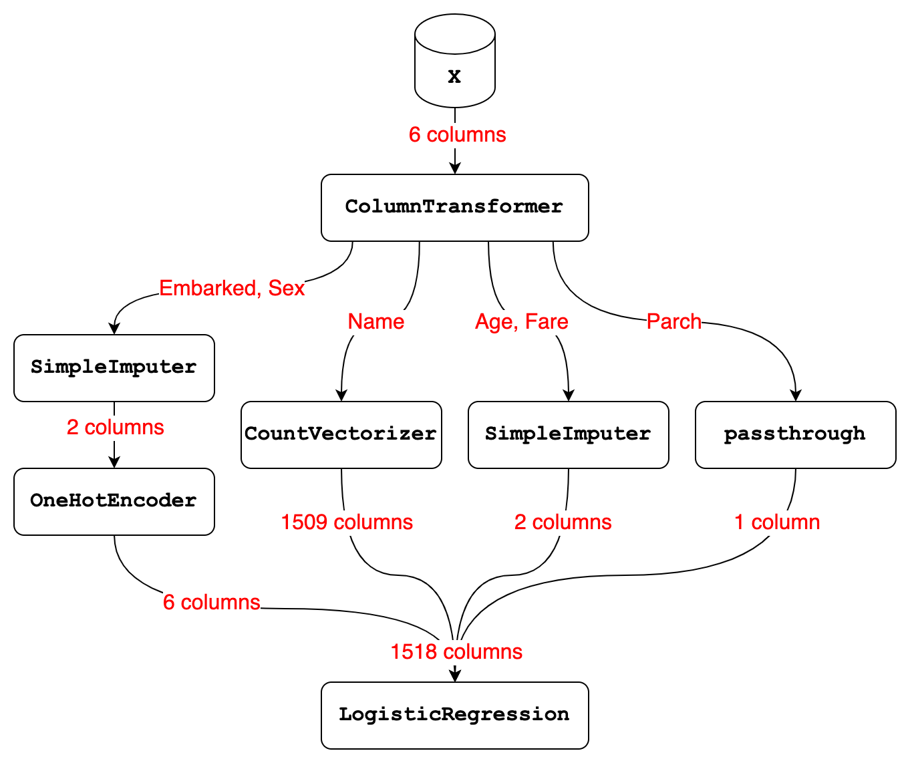

import pandas as pd
from sklearn.impute import SimpleImputer
from sklearn.preprocessing import OneHotEncoder
from sklearn.feature_extraction.text import CountVectorizer
from sklearn.linear_model import LogisticRegression
from sklearn.compose import make_column_transformer
from sklearn.pipeline import make_pipeline9 Workflow review #2
9.1 Recap of our workflow
In this chapter, we’re going to review the workflow that we’ve built so far and also discuss the concept of data leakage.
To start, we’re going to walk through all of the code that’s necessary to recreate our workflow up to this point. We begin by importing pandas, the three transformer classes we’re using, one modeling class, and two composition functions.
Next, we create a list of the six columns we’re going to select from our data.
cols = ['Parch', 'Fare', 'Embarked', 'Sex', 'Name', 'Age']Then, we read in all of the training data and use it to define our X and y.
df = pd.read_csv('http://bit.ly/MLtrain')
X = df[cols]
y = df['Survived']And we read in all of the new data and use it to define X_new.
df_new = pd.read_csv('http://bit.ly/MLnewdata')
X_new = df_new[cols]We create four instances of our transformers, namely two different instances of SimpleImputer and one instance each of OneHotEncoder and CountVectorizer.
imp = SimpleImputer()
imp_constant = SimpleImputer(strategy='constant', fill_value='missing')
ohe = OneHotEncoder()
vect = CountVectorizer()We create a two-step transformer Pipeline of constant value imputation and one-hot encoding.
imp_ohe = make_pipeline(imp_constant, ohe)And then we build the ColumnTransformer, which imputes and one-hot encodes Embarked and Sex, vectorizes Name, imputes Age and Fare, and passes through Parch.
ct = make_column_transformer(
(imp_ohe, ['Embarked', 'Sex']),
(vect, 'Name'),
(imp, ['Age', 'Fare']),
('passthrough', ['Parch']))We also create an instance of logistic regression.
logreg = LogisticRegression(solver='liblinear', random_state=1)Finally, we create a two-step modeling Pipeline, fit the Pipeline to X and y, and use the fitted Pipeline to make predictions on X_new.
pipe = make_pipeline(ct, logreg)
pipe.fit(X, y)
pipe.predict(X_new)array([0, 1, 0, 0, 1, 0, 1, 0, 1, 0, 0, 0, 1, 0, 1, 1, 0, 0, 0, 1, 0, 1,
1, 0, 1, 0, 1, 0, 0, 0, 0, 0, 1, 1, 0, 0, 1, 1, 0, 0, 0, 0, 0, 1,
1, 0, 0, 0, 1, 1, 0, 0, 1, 1, 0, 0, 0, 0, 0, 1, 0, 0, 0, 1, 1, 1,
1, 0, 0, 1, 1, 0, 1, 0, 1, 1, 0, 1, 0, 1, 0, 1, 0, 0, 0, 0, 1, 1,
1, 1, 1, 0, 1, 0, 0, 0, 1, 0, 1, 0, 1, 0, 0, 0, 1, 0, 0, 0, 0, 0,
0, 1, 1, 1, 1, 0, 0, 1, 0, 1, 1, 0, 1, 0, 0, 1, 0, 1, 0, 0, 0, 0,
0, 0, 0, 0, 0, 0, 1, 0, 0, 1, 0, 0, 0, 0, 0, 0, 0, 0, 1, 0, 0, 0,
1, 0, 1, 1, 0, 1, 1, 1, 1, 0, 0, 1, 0, 0, 1, 1, 0, 0, 0, 0, 0, 1,
1, 0, 1, 1, 0, 0, 1, 0, 1, 0, 1, 0, 0, 0, 0, 0, 0, 0, 1, 0, 1, 1,
0, 1, 1, 0, 1, 1, 0, 0, 1, 0, 1, 0, 0, 0, 0, 1, 0, 0, 1, 0, 1, 0,
1, 0, 1, 0, 1, 1, 0, 1, 0, 0, 0, 1, 0, 0, 0, 0, 0, 0, 1, 1, 1, 1,
1, 0, 0, 0, 1, 0, 1, 1, 0, 0, 1, 0, 0, 0, 0, 0, 1, 0, 0, 0, 1, 1,
0, 0, 0, 0, 1, 0, 0, 0, 1, 1, 0, 1, 0, 0, 0, 0, 1, 0, 1, 1, 1, 0,
0, 0, 0, 0, 0, 1, 0, 0, 0, 0, 1, 0, 0, 0, 0, 0, 0, 0, 1, 1, 0, 1,
0, 1, 0, 0, 0, 1, 1, 1, 1, 0, 0, 0, 0, 0, 0, 0, 1, 0, 1, 0, 0, 0,
1, 0, 0, 1, 0, 0, 0, 0, 0, 1, 0, 0, 0, 1, 0, 1, 0, 1, 0, 1, 1, 0,
0, 0, 1, 0, 1, 0, 0, 1, 0, 1, 1, 0, 1, 0, 0, 1, 1, 0, 0, 1, 0, 0,
1, 1, 1, 0, 0, 1, 0, 0, 1, 1, 0, 1, 0, 0, 0, 0, 0, 1, 1, 0, 0, 1,
0, 1, 0, 0, 1, 0, 1, 0, 0, 0, 0, 1, 1, 1, 1, 1, 1, 0, 1, 0, 0, 1])That’s really all the code we need to recreate our workflow from the book so far. As a reminder, there are no calls to fit_transform or transform because all of that functionality is encapsulated by the Pipeline.
9.2 Comparing ColumnTransformer and Pipeline
Here’s a diagram that illustrates our workflow so far, which we will briefly review.
Let’s start with the ColumnTransformer, which received 6 columns of input from the X DataFrame:
- It selected the Embarked and Sex columns and passed them to the transformer Pipeline of SimpleImputer and OneHotEncoder. The SimpleImputer step of that Pipeline imputed a constant value and output 2 columns, and the OneHotEncoder step transformed those 2 columns into 6 columns.
- It selected the Name column and passed it to the CountVectorizer, which output 1509 columns.
- It selected the Age and Fare columns and passed them to the SimpleImputer, which imputed the mean and output 2 columns.
- It selected the Parch column and passed it through unmodified.
- Finally, it stacked the 6 plus 1509 plus 2 plus 1 columns side-by-side, resulting in a total of 1518 columns.
Now let’s talk about the modeling Pipeline, which has 2 steps:
- Step 1 is a ColumnTransformer that received 6 columns of input and transformed them into 1518 columns.
- Step 2 is a logistic regression model that received 1518 columns of input and used those columns either for fitting or predicting.

With those examples in mind, we can step back and briefly review the differences between a ColumnTransformer and a Pipeline:
- A ColumnTransformer pulls out subsets of columns and transforms them independently, and then stacks the results side-by-side.
- It only ever does data transformations.
- And it does not have steps, because each subset of columns is transformed independently.
In contrast:
- A Pipeline is a series of steps that occur in order, and the output of each step becomes the input to the next step.
- And the last step of a Pipeline can be a model or a transformer, whereas all other steps must be transformers.
Finally, we can print out the Pipeline to see a similar diagram. You can see that our workflow includes a transformer Pipeline, meaning a Pipeline that ends in a transformer, inside a ColumnTransformer, which is inside of a modeling Pipeline, meaning a Pipeline that ends in a model.
pipePipeline(steps=[('columntransformer',
ColumnTransformer(transformers=[('pipeline',
Pipeline(steps=[('simpleimputer',
SimpleImputer(fill_value='missing',
strategy='constant')),
('onehotencoder',
OneHotEncoder())]),
['Embarked', 'Sex']),
('countvectorizer',
CountVectorizer(), 'Name'),
('simpleimputer',
SimpleImputer(),
['Age', 'Fare']),
('passthrough', 'passthrough',
['Parch'])])),
('logisticregression',
LogisticRegression(random_state=1, solver='liblinear'))])ColumnTransformer(transformers=[('pipeline',
Pipeline(steps=[('simpleimputer',
SimpleImputer(fill_value='missing',
strategy='constant')),
('onehotencoder',
OneHotEncoder())]),
['Embarked', 'Sex']),
('countvectorizer', CountVectorizer(), 'Name'),
('simpleimputer', SimpleImputer(),
['Age', 'Fare']),
('passthrough', 'passthrough', ['Parch'])])['Embarked', 'Sex']
SimpleImputer(fill_value='missing', strategy='constant')
OneHotEncoder()
Name
CountVectorizer()
['Age', 'Fare']
SimpleImputer()
['Parch']
passthrough
LogisticRegression(random_state=1, solver='liblinear')
9.3 Why not use pandas for transformations?
One question you might be wondering about is why we did all of our data transformations in scikit-learn, when instead we could have done some of them in pandas and then passed the transformed data to scikit-learn. There are four main reasons.
First, CountVectorizer is not available within pandas, and it’s one of the most useful techniques for encoding text data. You could try doing most of your transformations in pandas and then just use CountVectorizer in scikit-learn, but that adds additional complexity to your workflow, especially if you have to combine the dense matrix output by pandas with the sparse matrix output by CountVectorizer. Thus, your workflow is more efficient when you do all of your transformations within scikit-learn.
Second, one-hot encoding is available within pandas using the get_dummies function, but you would probably end up adding the one-hot encoded columns to your DataFrame, which makes the DataFrame wider and more difficult to navigate. By using scikit-learn for one-hot encoding instead, you can leave the source DataFrame in its original format.
Third, missing value imputation is available within pandas using the fillna function, but that will actually result in data leakage, which I’ll explain in detail in the next lesson. By using scikit-learn for imputation instead, you avoid the problem of data leakage.
Finally, doing all of your transformations within scikit-learn allows you to cross-validate and tune your entire Pipeline rather than just your model. This will often lead to a better-performing model, which I’ll explain and demonstrate in the next chapter.
9.4 Preventing data leakage
In the previous lesson, I mentioned that imputing missing values in pandas would lead to something called “data leakage”. So what is data leakage? Data leakage is when you inadvertently include knowledge from the testing data when training a model.
First, I’ll explain why this is problematic, and then I’ll explain why imputing missing values in pandas would cause data leakage.
In short, data leakage is problematic because it will cause your model evaluation scores to be less reliable. This may lead you to make bad decisions when tuning hyperparameters, and it will lead you to overestimate how well your model will perform on new data. It’s hard to know whether data leakage will skew your evaluation scores by a negligible amount or a huge amount, so it’s best to just avoid data leakage entirely.
So why would imputing missing values in pandas cause data leakage? Your model evaluation procedure, such as cross-validation, is supposed to simulate the future, so that you can accurately estimate right now how well your model will perform on new data. But if you impute missing values on your whole dataset in pandas and then pass your dataset to scikit-learn, your model evaluation procedure will no longer be an accurate simulation of reality. That’s because the imputation values will be based on your entire dataset, meaning both the training portion and the testing portion, whereas the imputation values should just be based on the training portion.
In other words, imputation based on the entire dataset is like peeking into the future and then using what you learned from the future during model training, which is definitely not allowed.
You might think that one way around this problem would be to split your dataset into training and testing sets and then impute missing values using pandas. That would work if you’re only planning to use train/test split for model evaluation, but it would not work if you’re ever planning to use cross-validation. That’s because during 5-fold cross-validation, the rows contained in the training set will change 5 times, and thus it’s quite impractical to avoid data leakage if you use pandas for imputation while using cross-validation.
So far, we’ve only been talking about data leakage in the context of missing value imputation. But there are other transformations that if done in pandas on the full dataset will also cause data leakage. For example, feature scaling in pandas would lead to data leakage, and even one-hot encoding in pandas would lead to data leakage unless there’s a known, fixed set of categories. More generally, any transformation which incorporates information about other rows when transforming a row will lead to data leakage if done in pandas.
Now that you’ve learned how data transformations in pandas can cause data leakage, I’ll briefly mention three ways in which scikit-learn prevents data leakage:
- First, scikit-learn transformers have separate fit and transform steps, which allow you to base your data transformations on the training set only, and then apply those transformations to both the training set and the testing set.
- Second, the fit and predict methods of a Pipeline encapsulate all calls to fit_transform and transform so that they’re called at the appropriate times.
- Third, cross_val_score splits the data prior to performing data transformations, which I’ll explain in detail in the next chapter.